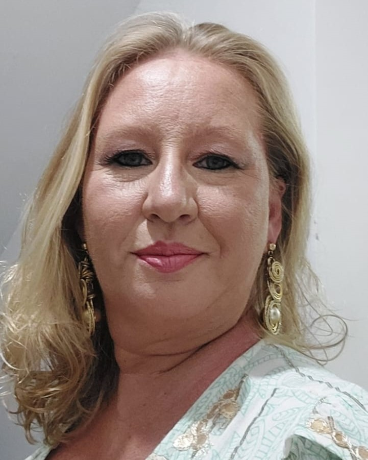

O QUE É O CAFÉ FILOSOCIOLOGICO ?
O Café Filosociológico tem se legitimado nos últimos anos como uma prática pedagógica no currículo destinado
aos estudantes do Ensino Médio e da Formação de Docentes no Colégio Estadual Presidente Abraham Lincoln,
atendendo às Diretrizes Curriculares Estaduais(DCEs) do estado do Paraná e o Projeto Político Pedagógico da
instituição escolar. Consideramos o escopo da Lei Nº 1.684/2008 que instituiu a inclusão da Filosofia e da
Sociologia como disciplinas obrigatórias no currículo do Ensino Médio, com conteúdos e metodologias
basilares para a formação de sujeitos que alcancem, pelas práticas educativas a criticidade e emancipação na
sociedade. Ademais as Resoluções emanadas do Conselho Nacional de Educação, Conselho Pleno, Resolução CNE/CP
nº 1, de 30 de maio de 2012 que Estabelece Diretrizes Nacionais para a Educação em Direitos Humanos e a
Resolução CNE/CP nº 2, de 15 de junho de 2012 que Estabelece as Diretrizes Curriculares Nacionais para a
Educação Ambiental.
TEMAS ABORDADOS
BIOMAS DO BRASIL
Informações sobre os biomas do Brasil, focando na Mata Atlântica...
BIOMAS DA REGIÃO SUL
Informações sobre os biomas do Sul do Brasil, focando no Pampa...
BIOMAS DO PARANÁ
Informações sobre os biomas do Paraná e áreas de transição com o Cerrado...
Estrutura da Exposição:
A exposição será dividida em três Grupos Temáticos (GTs), cada um com um enfoque específico nos biomas
brasileiros, na região Sul e no estado do Paraná. Os pôsteres serão elaborados pelos estudantes, que
trabalharão em grupos sob a orientação de professores de diferentes disciplinas, como Biologia, Filosofia,
Sociologia, Educação Física, Educação Financeira, História, Língua Portuguesa e Inglesa.
metodologias de trabalho
Detalhes sobre eventos...
COORDENADORES DO 12º CAFÉ FILOSOCIOLOGICO

Prof. Dr. Luiz Aparecido Alves de Souza - Professor de História na Rede Pública do Estado do Paraná (SEED-PR)
e Técnico em Assuntos Educacionais no Instituto Federal do Paraná (IFPR).

Me. Taysa Cristina Bedak Junkes - Possui graduação em Ciências Biológicas pela Universidade Federal do Paraná
(2003) e é professora na Secretaria de Educação do Estado do Paraná.